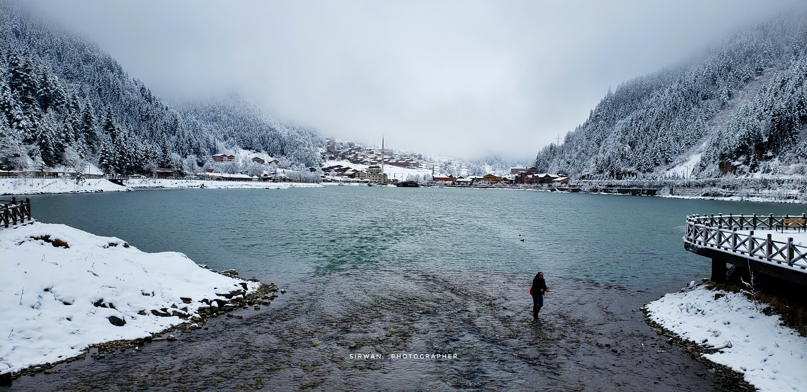
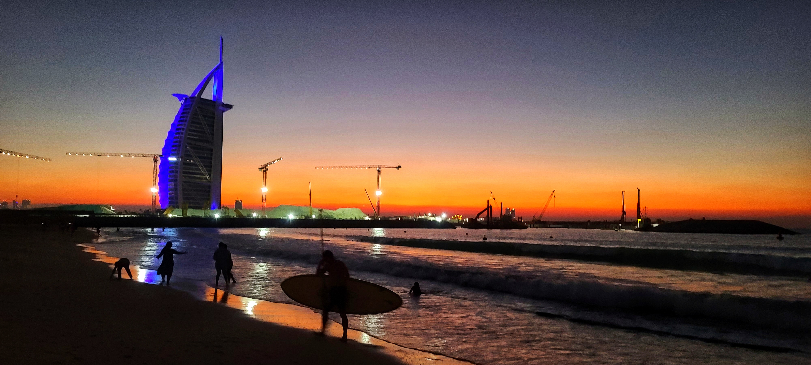
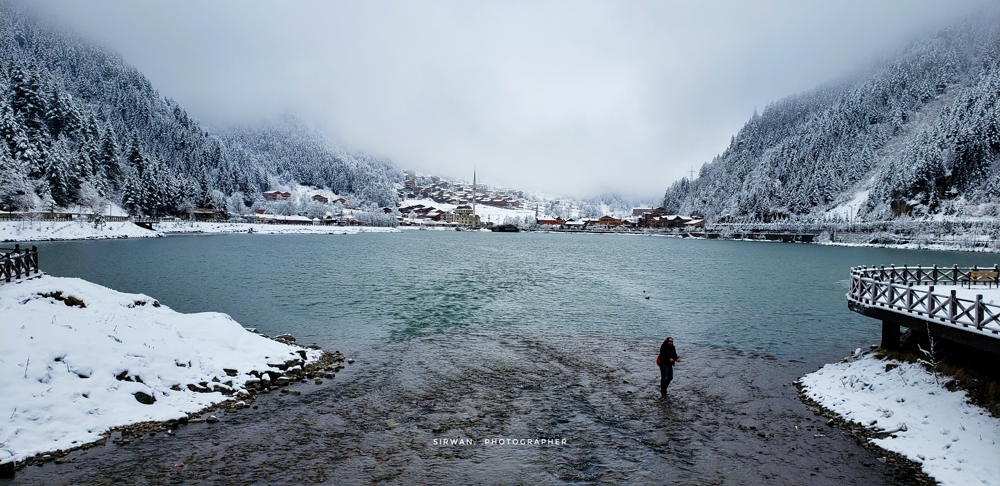
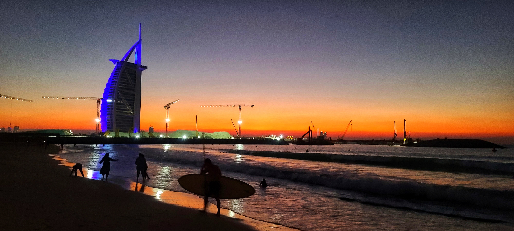
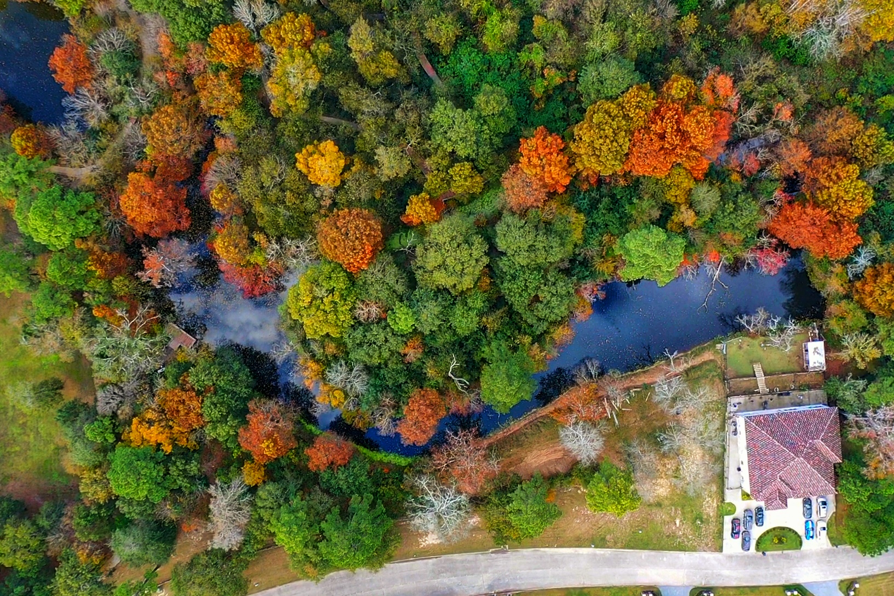
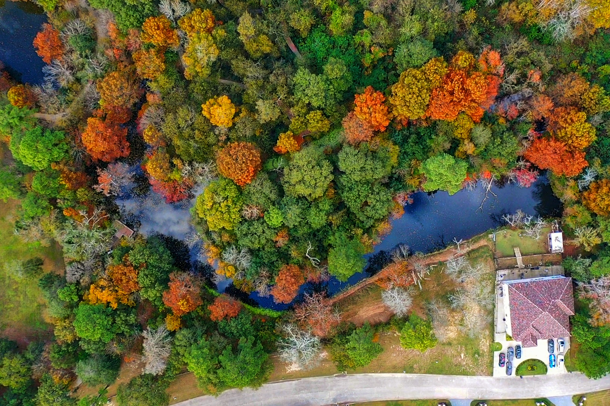
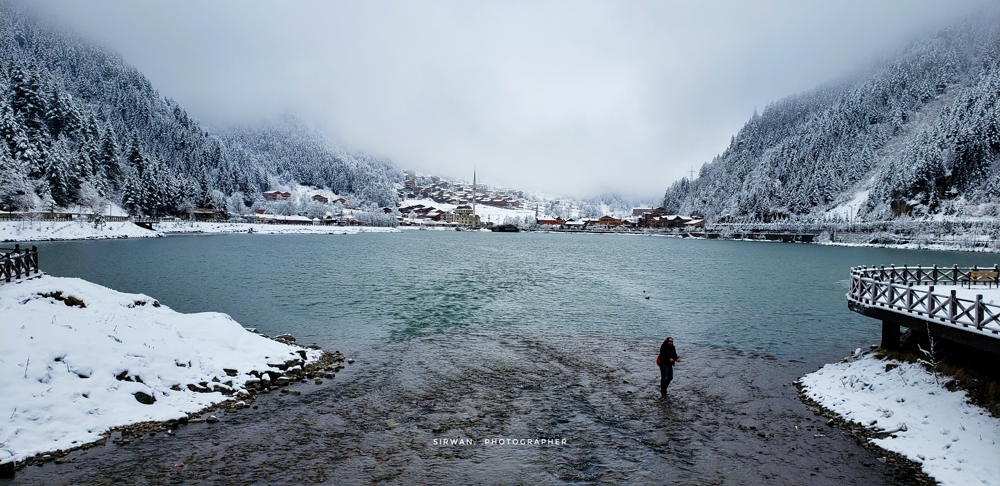
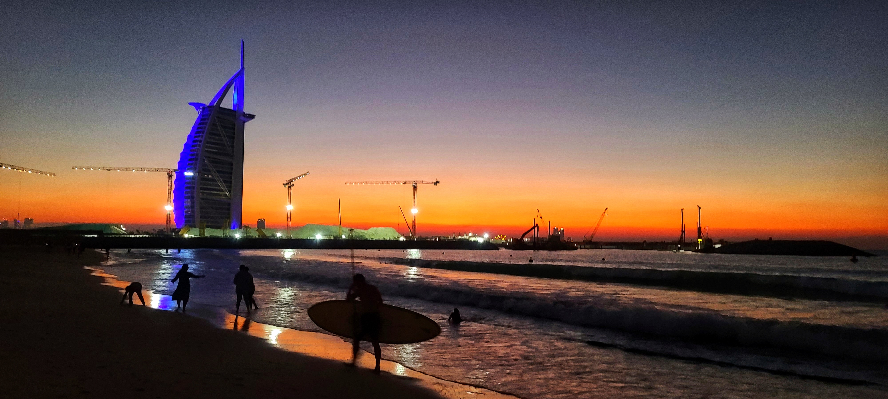
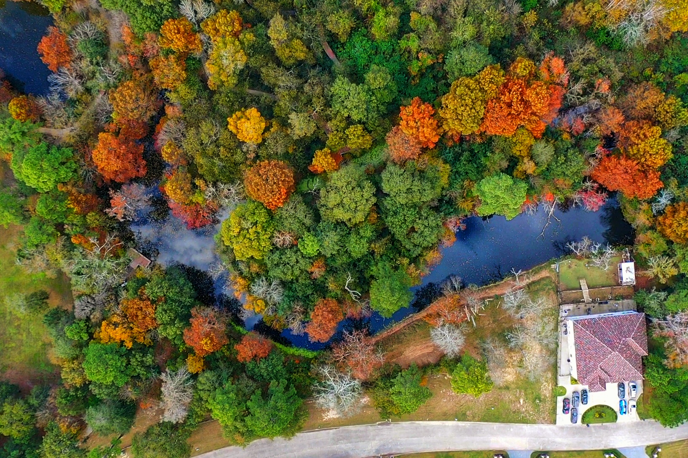

Work


 




 

My name is Trevor Hanks, Well-qualified Process Engineer with 6 years
of experience in industrial plant process control systems, including
programming and technical support. Responsibilities also include
development, design, and maintenance of process control hardware and
software.
Experience . . .
Analyzing short and long-term hardware and software equipment and components to avoid production delays
Assessing instrumentation requirements and designing the appropriate and cost-effective technical solutions
Providing oral and written communication regarding interfaces operations managers and departmental staff
Support for manufacturing personnel through monitoring of control systems
company policy,
And now let me tell you about the other side that what I love to do
for most of my time as a Photographer I have been a Photographer for
about 14 years I have done a lot of sessions and below you will see
some of my work as a photographer.
But recently I decided to change my entire career, so I
did a lot of research, asked my friends, and thought a lot then I
choose to become a software engineer I know it will be not easy but I
know I can do it.


